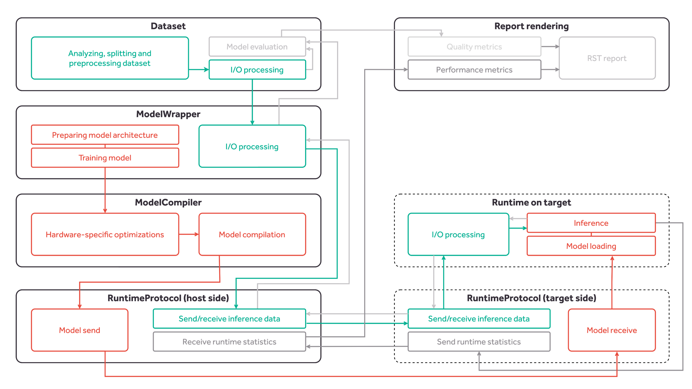

Kenning API¶
Deployment API overview¶

Fig. 5 Kenning core classes and interactions between them. The green blocks represent the flow of the input data that is passed to the model for inference. The orange blocks represent the flow of model deployment flow, from training to inference on target device. The grey blocks represent the inference results and metrics flow.¶
Kenning provides:
Dataset class - performs dataset downloading, preparation, input preprocessing, output postprocessing and model evaluation,
ModelWrapper class - trains the model, prepares the model, performs model-specific input preprocessing and output postprocessing, runs inference on host using native framework,
Optimizer class - optimizes and compiles the model,
Runtime class - loads the model, performs inference on compiled model, runs target-specific processing of inputs and outputs, and runs performance benchmarks,
RuntimeProtocol class - implements the communication protocol between the host and the target,
DataProvider class - implements providing data from such sources as camera, TCP connection or others for inference,
OutputCollector class - implements parsing and utilizing data coming from inference (such as displaying the visualizations, sending the results to via TCP).
Model processing¶
The orange blocks and arrows in the Fig. 5 represent the model life cycle:
the model is designed, trained, evaluated and improved - the training is implemented in the ModelWrapper. .. note:: This is an optional step - the already trained model can also be wrapped and used.
the model is passed to the Optimizer, where it is optimized for a given hardware and later compiled,
during inference testing, the model is sent to the target using RuntimeProtocol,
the model is loaded on target side and used for inference using Runtime.
Once the development of the model is complete, the optimized and compiled model can be used directly on target device using Runtime.
I/O data flow¶
The data flow is represented in the Fig. 5 with the green blocks. The input data flow is depicted using green arrows, and the output data flow is depicted using grey arrows.
Firstly, the input and output data is loaded from dataset files and processed. Later, since every model has its specific input preprocessing and output postprocessing routines, the data is passed to the ModelWrapper methods to apply those modifications. During inference testing, the data is sent to and from the target using RuntimeProtocol.
In the end, since Runtime runtimes also have their specific representations of data, the proper I/O processing is applied.
Reporting data flow¶
The report rendering requires performance metrics and quality metrics. The flow for this is presented with grey lines and blocks in Fig. 5.
On target side, the performance metrics are computed and sent using RuntimeProtocol back to the host, and later passed to the report rendering. After the output data goes through processing in the Runtime and ModelWrapper, it is compared to the ground truth in the Dataset during model evaluation. In the end, the results of model evaluation are passsed to the report rendering.
The final report is generated as an RST file with figures, as can be observed in the Sample autogenerated report.
Dataset¶
kennning.core.dataset.Dataset-based classes are responsible for:
preparing the dataset, including the download routines (use
--download-datasetflag to download the dataset data),preprocessing the inputs into the format expected by most of the models for a given task,
postprocessing the outputs for the evaluation process,
evaluating a given model based on its predictions,
subdividing the samples into training and validation datasets.
The Dataset objects are used by:
ModelWrapper - for training purposes and model evaluation,
Optimizer - can be used i.e. for extracting calibration dataset for quantization purposes,
Runtime - is used for evaluating the model on target hardware.
The available implementations of datasets are included in the kenning.datasets submodule.
The example implementations:
PetDataset for classification,
OpenImagesDatasetV6 for object detection,
ModelWrapper¶
kenning.core.model.ModelWrapper base class requires implementing methods for:
model preparation,
model saving and loading,
model saving to the ONNX format,
model-specific preprocessing of inputs and postprocessing of outputs, if neccessary,
model inference,
providing metadata (framework name and version),
model training,
input format specification,
conversion of model inputs and outputs to bytes for the
kenning.core.runtimeprotocol.RuntimeProtocolobjects.
The ModelWrapper provides methods for running the inference in a loop for data from dataset and measuring both the quality and inference performance of the model.
The kenning.modelwrappers.frameworks submodule contains framework-wise implementations of ModelWrapper class - they implement all methods that are common for given frameworks regardless of used model.
For the `Pet Dataset wrapper`_ object there is an example classifier implemented in TensorFlow 2.x called TensorFlowPetDatasetMobileNetV2.
Examples of model wrappers:
PyTorchWrapper and TensorFlowWrapper implement common methods for all models in PyTorch and TensorFlow frameworks,
PyTorchPetDatasetMobileNetV2 wraps the MobileNetV2 model for Pet classification implemented in PyTorch,
TensorFlowDatasetMobileNetV2 wraps the MobileNetV2 model for Pet classification implemented in TensorFlow,
TVMDarknetCOCOYOLOV3 wraps the YOLOv3 model for COCO objet detection implemented in Darknet (without training and inference methods).
Optimizer¶
kenning.core.optimizer.Optimizer objects wrap the deep learning compilation process.
They can perform the optimization of models (operation fusion, quantization) as well.
All Optimizer objects should provide methods for compiling models in ONNX format, but they can also provide support for other formats (like Keras .h5 files, or PyTorch .th files).
Example model compilers:
TFLiteCompiler - wraps TensorFlow Lite compilation,
TVMCompiler - wraps TVM compilation.
Runtime¶
kenning.core.runtime.Runtime class provides interfaces for methods for running compiled models locally or remotely on target device.
Runtimes are usually compiler-specific (frameworks for deep learning compilers provide runtime libraries to run compiled models on a given hardware).
The client (host) side of the Runtime class utilizes the methods from Dataset, ModelWrapper and RuntimeProtocol classes to run inference on the target device.
The server (target) side of the Runtime class requires implementing methods for:
loading model delivered by the client,
preparing inputs delivered by the client,
running inference,
preparing outputs to be delivered to the client,
(optionally) sending inference statistics.
The examples for runtimes are:
TFLiteRuntime for models compiled with TensorFlow Lite,
TVMRuntime for models compiled with TVM.
RuntimeProtocol¶
kenning.core.runtimeprotocol.RuntimeProtocol class conducts the communication between the client (host) and the server (target).
The RuntimeProtocol class requires implementing methods for:
initializing the server and the client (communication-wise),
waiting for the incoming data,
sending the data,
receiving the data,
uploading the model inputs to the server,
uploading the model to the server,
requesting the inference on target,
downloading the outputs from the server,
(optionally) downloading the statistics from the server (i.e. performance speed, CPU/GPU utilization, power consumption),
notifying of success or failure by the server,
parsing messages.
Based on the above-mentioned methods, the kenning.core.runtime.Runtime connects the host with the target.
The examples of RuntimeProtocol:
NetworkProtocol - implements a TCP-based communication between the host and the client.
Runtime protocol specification¶
The communication protocol is message-based. There are:
OKmessages - indicate success, and may come with additional information,ERRORmessages - indicate failure,DATAmessages - provide input data for inference,MODELmessages - provide model to load for inference,PROCESSmessages - request processing inputs delivered inDATAmessage,OUTPUTmessages - request results of processing,STATSmessages - request statistics from the target device.
The message types and enclosed data are encoded in format implemented in the kenning.core.runtimeprotocol.RuntimeProtocol-based class.
The communication during inference benchmark session is as follows:
The client (host) connects to the server (target),
The client sends the
MODELrequest along with the compiled model,The server loads the model from request, prepares everything for running the model and sends the
OKresponse,After receiving the
OKresponse from the server, the client starts reading input samples from the dataset, preprocesses the inputs, and sendsDATArequest with the preprocessed input,Upon receiving the
DATArequest, the server stores the input for inference, and sends theOKmessage,Upon receiving confirmation, the client sends the
PROCESSrequest,Just after receiving the
PROCESSrequest, the server should send theOKmessage to confirm that it starts the inference, and just after finishing the inference the server should send anotherOKmessage to confirm that the inference is finished,After receiving the first
OKmessage, the client starts measuring inference time until the secondOKresponse is received,The client sends the
OUTPUTrequest in order to receive the outputs from the server,Server sends the
OKmessage along with the output data,The client parses the output and evaluates model performance,
The client sends
STATSrequest to obtain additional statistics (inference time, CPU/GPU/Memory utilization) from the server,If server provides any statistics, it sends the
OKmessage with the data,The same process applies to the rest of input samples.
The way of determining the message type and sending data between the server and the client depends on the implementation of the kenning.core.runtimeprotocol.RuntimeProtocol class.
The implementation of running inference on the given target is implemented in the kenning.core.runtime.Runtime class.
RuntimeProtocol API¶
kenning.core.runtimeprotocol.RuntimeProtocol-based classes implement the Runtime protocol specification in a given mean of transport, i.e. TCP connection, or UART.
It requires implementing methods for:
initializing server (target hardware) and client (compiling host),
sending and receiving data,
connecting and disconnecting,
uploading (host) and downloading (target hardware) the model,
parsing and creating messages.
Measurements¶
kenning.core.measurements module contains Measurements and MeasurementsCollector classes for collecting performance and quality metrics.
Measurements is a dict-like object that provides various methods for adding the performance metrics, adding values for time series, and updating existing values.
The dictionary held by Measurements needs to have serializable data, since most of the scripts save the performance results later in the JSON format for later report generation.
Module containing decorators for benchmark data gathering.
- class kenning.core.measurements.Measurements¶
Stores benchmark measurements for later processing.
This is a dict-like object that wraps all processing results for later raport generation.
The dictionary in Measurements has measurement type as a key, and list of values for given measurement type.
There can be other values assigned to a given measurement type than list, but it requires explicit initialization.
- data¶
Dictionary storing lists of values
- Type
dict
- accumulate(measurementtype: str, valuetoadd: ~typing.Any, initvaluefunc: ~typing.Callable[[], ~typing.Any] = <function Measurements.<lambda>>) List¶
Adds given value to a measurement.
This function adds given value (it can be integer, float, numpy array, or any type that implements iadd operator).
If it is the first assignment to a given measurement type, the first list element is initialized with the
initvaluefunc(function returns the initial value).- Parameters
measurementtype (str) – the name of the measurement
valuetoadd (Any) – New value to add to the measurement
initvaluefunc (Any) – The initial value of the measurement, default 0
- add_measurement(measurementtype: str, value: ~typing.Any, initialvaluefunc: ~typing.Callable = <function Measurements.<lambda>>)¶
Add new value to a given measurement type.
- Parameters
measurementtype (str) – the measurement type to be updated
value (Any) – the value to add
initialvaluefunc (Callable) – the initial value for the measurement
- add_measurements_list(measurementtype: str, valueslist: List)¶
Adds new values to a given measurement type.
- Parameters
measurementtype (str) – the measurement type to be updated
valueslist (List) – the list of values to add
- get_values(measurementtype: str) List¶
Returns list of values for a given measurement type.
- Parameters
measurementtype (str) – The name of the measurement type
- Returns
List
- Return type
list of values for a given measurement type
- initialize_measurement(measurement_type: str, value: Any)¶
Sets the initial value for a given measurement type.
By default, the initial values for every measurement are empty lists. Lists are meant to collect time series data and other probed measurements for further analysis.
In case the data is collected in a different container, it should be configured explicitly.
- Parameters
measurement_type (str) – The type (name) of the measurement
value (Any) – The initial value for the measurement type
- update_measurements(other: Union[Dict, Measurements])¶
Adds measurements of types given in the other object.
It requires another Measurements object, or a dictionary that has string keys and values that are lists of values. The lists from the other object are appended to the lists in this object.
- Parameters
other (Union[Dict, 'Measurements']) – A dictionary or another Measurements object that contains lists in every entry.
- class kenning.core.measurements.MeasurementsCollector¶
It is a ‘static’ class collecting measurements from various sources.
- classmethod save_measurements(resultpath: Path)¶
Saves measurements to JSON file.
- Parameters
resultpath (Path) – Path to the saved JSON file
- class kenning.core.measurements.SystemStatsCollector(prefix: str, step: float = 0.1)¶
It is a separate thread used for collecting system statistics.
It collects:
CPU utilization,
RAM utilization,
GPU utilization,
GPU Memory utilization.
It can be executed in parallel to another function to check its utilization of resources.
- get_measurements()¶
Returns measurements from the thread.
Collected measurements names are prefixed by the prefix given in the constructor.
The list of measurements:
<prefix>_cpus_percent: gives per-core CPU utilization (%),
<prefix>_mem_percent: gives overall memory usage (%),
<prefix>_gpu_utilization: gives overall GPU utilization (%),
<prefix>_gpu_mem_utilization: gives overall memory utilization (%),
<prefix>_timestamp: gives the timestamp of above measurements (ns).
- Returns
Measurements
- Return type
Measurements object.
- run()¶
Method representing the thread’s activity.
You may override this method in a subclass. The standard run() method invokes the callable object passed to the object’s constructor as the target argument, if any, with sequential and keyword arguments taken from the args and kwargs arguments, respectively.
- kenning.core.measurements.systemstatsmeasurements(measurementname: str, step: float = 0.5)¶
Decorator for measuring memory usage of the function.
Check SystemStatsCollector.get_measurements for list of delivered measurements.
- Parameters
measurementname (str) – The name of the measurement type.
step (float) – The step for the measurements, in seconds
- kenning.core.measurements.timemeasurements(measurementname: str)¶
Decorator for measuring time of the function.
The duration is given in nanoseconds.
- Parameters
measurementname (str) – The name of the measurement type.
ONNXConversion¶
ONNXConversion object contains methods for converting models in various frameworks to ONNX and vice versa. It also provides methods for testing the conversion process empirically on a list of deep learning models implemented in tested frameworks.
- class kenning.core.onnxconversion.ONNXConversion(framework, version)¶
Creates ONNX conversion support matrix for given framework and models.
- add_entry(name, modelgenerator, **kwargs)¶
Adds new model for verification.
- Parameters
name (str) – Full name of the model, should match the name of the same models in other framework’s implementations
modelgenerator (Callable) – Function that generates the model for ONNX conversion in a given framework. The callable should accept no arguments
kwargs (Dict[str, Any]) – Additional arguments that are passed to ModelEntry object as parameters
- check_conversions(modelsdir: Path) List[Support]¶
Runs ONNX conversion for every model entry in the list of models.
- Parameters
modelsdir (Path) – Path to the directory where the intermediate models will be saved.
- Returns
List with Support tuples describing support status.
- Return type
List[Support]
- onnx_export(modelentry: ModelEntry, exportpath: Path)¶
Virtual function for exporting the model to ONNX in a given framework.
This method needs to be implemented for a given framework in inheriting class.
- Parameters
modelentry (ModelEntry) – ModelEntry object.
exportpath (Path) – Path to the output ONNX file.
- Returns
SupportStatus
- Return type
the support status of exporting given model to ONNX
- onnx_import(modelentry: ModelEntry, importpath: Path)¶
Virtual function for importing ONNX model to a given framework.
This method needs to be implemented for a given framework in inheriting class.
- Parameters
modelentry (ModelEntry) – ModelEntry object.
importpath (Path) – Path to the input ONNX file.
- Returns
SupportStatus
- Return type
the support status of importing given model from ONNX
- prepare()¶
Virtual function for preparing the ONNX conversion test.
This method should add model entries using add_entry methos.
It is later called in the constructor to prepare the list of models to test.
DataProvider¶
The DataProvider classes are used during deployment for providing data to infer. They can provide data from such sources as camera, video files, microphone data or TCP connection.
- class kenning.core.dataprovider.DataProvider¶
- detach_from_source()¶
Detaches from the source during shutdown
- fetch_input() Any¶
Gets the sample from device
- Returns
Any
- Return type
data to be processed by the model
- classmethod form_argparse()¶
Creates argparse parser for the DataProvider object.
This method is used to create a list of arguments for the object so it is possible to configure the object from the level of command line.
- Returns
tuple with the argument parser object that can act as parent for program’s argument parser, and the corresponding arguments’ group pointer
- Return type
(ArgumentParser, ArgumentGroup)
- classmethod from_argparse(args)¶
Constructor wrapper that takes the parameters from argparse args.
This method takes the arguments created in form_argparse and uses them to create the object.
- Parameters
args (Dict) – arguments from ArgumentParser object
- Returns
DataProvider
- Return type
object of class DataProvider
- prepare()¶
Prepares the source for data gathering depending on the source type.
This will for example initialize the camera and set the self.device to it
- preprocess_input(data: Any) Any¶
Performs provider-specific preprocessing of inputs
- Parameters
data (Any) – the data to be preprocessed
- Returns
Any
- Return type
preprocessed data
OutputCollector¶
The OutputCollector classes are used during deployment for receiving and processing inference results. They can display the results, send them, or store them in a file.
- class kenning.core.outputcollector.OutputCollector¶
- detach_from_output()¶
Detaches from the output during shutdown
- classmethod form_argparse()¶
Creates argparse parser for the OutputCollector object.
This method is used to create a list of arguments for the object so it is possible to configure the object from the level of command line.
- Returns
tuple with the argument parser object that can act as parent for program’s argument parser, and the corresponding arguments’ group pointer
- Return type
(ArgumentParser, ArgumentGroup)
- classmethod from_argparse(args)¶
Constructor wrapper that takes the parameters from argparse args.
This method takes the arguments created in form_argparse and uses them to create the object.
- Parameters
args (Dict) – arguments from ArgumentParser object
- Returns
OutputCollector
- Return type
object of class OutputCollector
- process_output(input_data: Any, output_data: Any)¶
Returns the infered data back to the specific place/device/connection
Eg. it can save a video file with bounding boxes on objects or stream it via a TCP connection, or just show it on screen
- Parameters
input_data (Any) – Data collected from Datacollector that was processed by the model
output_data (Any) – Data returned from the model
- should_close() bool¶
Checks if a specific exit condition was reached
This allows the OutputCollector to close gracefully if an exit condition was reached, eg. when a key was pressed.
- Returns
bool
- Return type
True if exit condition was reached to break the loop